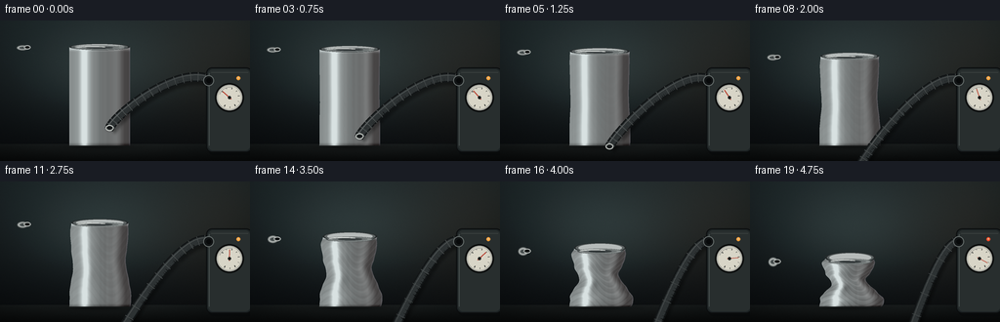
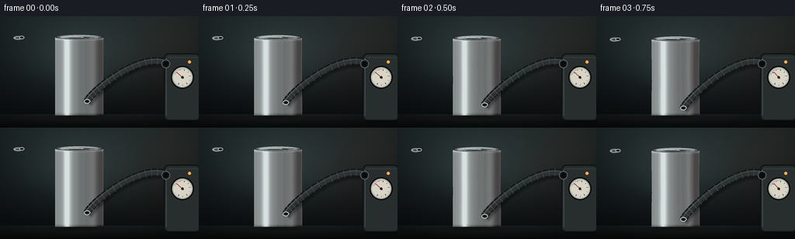

CODING AGENTS AS PIXEL WORLD MODELS
traex/DeepSeek-V4.1-Flash · phygen_017
点击播放 · 原生 RGB 像素
此结果可播放，但该运行尚未通过最终提交审核。页面展示不代表评测通过。
逐轮保存的候选
回放视频、检查图与代码变化。
每份候选均可单独播放。实际图片检查记录在下方工具轨迹中。
候选 01播放与检查图
点击播放 · 原生 RGB 像素


展开代码变化
--- 上一保存版本
+++ 本次保存版本
@@ -0,0 +1,440 @@
+from pathlib import Path
+
+import numpy as np
+from PIL import Image, ImageDraw, ImageFilter
+
+import artifact_io
+
+
+WIDTH = 256
+HEIGHT = 144
+FRAMES = 20
+SS = 4
+W = WIDTH * SS
+H = HEIGHT * SS
+
+CAN_CX = 102.0
+CAN_BOTTOM = 128.0
+CAN_TOP0 = 27.0
+CAN_RADIUS = 31.0
+
+
+def smoothstep(edge0, edge1, x):
+ t = np.clip((x - edge0) / (edge1 - edge0), 0.0, 1.0)
+ return t * t * (3.0 - 2.0 * t)
+
+
+def deformation_at(frame):
+ t = frame / (FRAMES - 1)
+ gradual = t**1.55
+ buckle = smoothstep(0.58, 0.91, t)
+ return float(np.clip(0.70 * gradual + 0.30 * buckle, 0.0, 1.0))
+
+
+def background(rng):
+ yy, xx = np.mgrid[0:H, 0:W]
+ xn = xx / (W - 1)
+ yn = yy / (H - 1)
+ horizon = 126.5 / HEIGHT
+
+ top = np.array([30.0, 39.0, 41.0])
+ bottom = np.array([10.0, 13.0, 15.0])
+ wall_t = np.clip(yn / horizon, 0.0, 1.0)
+ wall = top[None, None, :] * (1.0 - wall_t[:, :, None]) + bottom[None, None, :] * wall_t[:, :, None]
+
+ # Soft studio spot behind the can.
+ glow = np.exp(-(((xn - 0.40) / 0.31) ** 2 + ((yn - 0.34) / 0.34) ** 2))
+ wall += glow[:, :, None] * np.array([20.0, 25.0, 24.0])[None, None, :]
+
+ # A restrained warm bounce from the right keeps the metal from feeling blue.
+ warm = np.exp(-(((xn - 0.91) / 0.30) ** 2 + ((yn - 0.29) / 0.52) ** 2))
+ wall += warm[:, :, None] * np.array([12.0, 7.0, 3.0])[None, None, :]
+
+ floor_mask = yn >= horizon
+ floor_t = np.clip((yn - horizon) / (1.0 - horizon), 0.0, 1.0)
+ floor = np.array([18.0, 22.0, 22.0])[None, None, :] * (1.0 - 0.62 * floor_t[:, :, None])
+ floor += (np.exp(-((xn - 0.43) / 0.36) ** 2) * (1.0 - floor_t) * 10.0)[:, :, None]
+ wall[floor_mask] = floor[floor_mask]
+
+ # Fine tonal grain and a gentle vignette.
+ grain = rng.normal(0.0, 1.15, (H, W, 1))
+ wall += grain
+ vignette = 1.0 - 0.30 * (((xn - 0.5) / 0.72) ** 2 + ((yn - 0.48) / 0.86) ** 2)
+ wall *= np.clip(vignette, 0.62, 1.0)[:, :, None]
+ return np.clip(wall, 0, 255)
+
+
+def can_geometry(deform):
+ top_y = CAN_TOP0 + 51.0 * deform
+ body_h = CAN_BOTTOM - top_y
+ return top_y, body_h
+
+
+def render_can(img, deform, frame, rng):
+ top_y, body_h = can_geometry(deform)
+ y0 = int(np.floor(top_y * SS)) - 1
+ y1 = int(np.ceil(CAN_BOTTOM * SS)) + 1
+ ys = np.arange(y0, y1, dtype=np.float32)
+ v = np.clip((CAN_BOTTOM * SS - ys) / (body_h * SS), 0.0, 1.0)
+
+ waist = 1.0 - 0.42 * deform * np.exp(-((v - 0.51) / 0.205) ** 2)
+ shoulder = 1.0 - 0.13 * deform * np.exp(-((v - 0.79) / 0.13) ** 2)
+ top_neck = 1.0 - 0.18 * deform * np.exp(-((v - 0.975) / 0.065) ** 2)
+ lower_flare = 1.0 + 0.075 * deform * np.exp(-((v - 0.13) / 0.115) ** 2)
+ contour_folds = 1.0 + 0.012 * deform * np.sin(13.0 * np.pi * v + 0.4)
+ half_w = CAN_RADIUS * waist * shoulder * top_neck * lower_flare * contour_folds
+ half_w *= SS
+
+ bend = deform * (2.2 * np.sin(2.0 * np.pi * v + 0.35) + 0.75 * np.sin(6.0 * np.pi * v))
+ center = (CAN_CX + bend) * SS
+
+ xx = np.arange(W, dtype=np.float32)[None, :]
+ u = (xx - center[:, None]) / np.maximum(half_w[:, None], 1.0)
+ inside = np.abs(u) <= 1.0
+ z = np.sqrt(np.clip(1.0 - u * u, 0.0, 1.0))
+
+ dhw = np.gradient(half_w)
+ dcenter = np.gradient(center)
+ nx = u
+ ny = -(dcenter[:, None] + u * dhw[:, None]) / SS
+ nz = z + 0.08
+ nlen = np.sqrt(nx * nx + ny * ny + nz * nz)
+ nx, ny, nz = nx / nlen, ny / nlen, nz / nlen
+
+ light = np.array([-0.50, -0.62, 0.61], dtype=np.float32)
+ light /= np.linalg.norm(light)
+ diffuse = np.clip(nx * light[0] + ny * light[1] + nz * light[2], 0.0, 1.0)
+
+ view = np.array([0.0, 0.0, 1.0], dtype=np.float32)
+ halfway = light + view
+ halfway /= np.linalg.norm(halfway)
+ spec_angle = np.clip(nx * halfway[0] + ny * halfway[1] + nz * halfway[2], 0.0, 1.0)
+ specular = spec_angle**42
+
+ left_band = np.exp(-((u + 0.51) / 0.135) ** 2)
+ right_band = np.exp(-((u - 0.57) / 0.16) ** 2)
+ center_dark = np.exp(-(u / 0.27) ** 2)
+ vertical_reflection = 0.38 + 0.83 * left_band + 0.20 * right_band - 0.10 * center_dark
+
+ streak_seed = rng.normal(0.0, 1.0, W).astype(np.float32)
+ kernel = np.ones(9, dtype=np.float32) / 9.0
+ streak_seed = np.convolve(streak_seed, kernel, mode="same")
+ brushed = 0.022 * streak_seed[None, :]
+
+ crease_phase = 9.0 * v[:, None] + 1.5 * np.sin(3.2 * u + 0.4)
+ compression_folds = deform * (
+ 0.034 * np.sin(2.0 * np.pi * crease_phase)
+ + 0.020 * np.sin(4.2 * np.pi * crease_phase + 1.1)
+ )
+ dent_a = np.exp(-((u + 0.24) / 0.18) ** 2 - ((v[:, None] - 0.43) / 0.13) ** 2)
+ dent_b = np.exp(-((u - 0.46) / 0.17) ** 2 - ((v[:, None] - 0.61) / 0.11) ** 2)
+ dent_shade = deform * (-0.18 * dent_a + 0.07 * dent_b)
+
+ edge_dist = np.clip(1.0 - np.abs(u), 0.0, 1.0)
+ edge_rim = np.exp(-(edge_dist / 0.035) ** 2)
+ top_ring = np.exp(-((v - 0.982) / 0.018) ** 2)
+ bottom_ring = np.exp(-(v / 0.020) ** 2)
+
+ intensity = (
+ 0.12
+ + 0.58 * diffuse
+ + 0.66 * vertical_reflection
+ + 0.48 * specular
+ + compression_folds
+ + dent_shade
+ + 0.28 * top_ring[:, None]
+ + 0.11 * edge_rim
+ - 0.24 * bottom_ring[:, None]
+ + brushed
+ )
+ intensity = np.clip(intensity, 0.03, 1.25)
+
+ silver = np.array([0.66, 0.69, 0.69], dtype=np.float32)
+ warm_bounce = np.clip((u + 0.2) * 0.5 + 0.5, 0.0, 1.0) ** 3
+ color = intensity[:, :, None] * silver[None, None, :]
+ color[:, :, 0] += 0.020 * warm_bounce
+ color[:, :, 2] += 0.018 * edge_rim * (u > 0)
+ color = color * 255.0
+
+ # Contact shadow is integrated before the can so its base remains grounded.
+ y_grid = np.arange(H, dtype=np.float32)[:, None]
+ x_grid = np.arange(W, dtype=np.float32)[None, :]
+ shadow = np.exp(-(((x_grid - CAN_CX * SS) / (35.0 * SS)) ** 2 + ((y_grid - 129.0 * SS) / (3.5 * SS)) ** 2))
+ img *= (1.0 - 0.36 * shadow[:, :, None])
+
+ region = img[y0:y1, :, :]
+ alpha = inside.astype(np.float32)[:, :, None]
+ region[:] = region * (1.0 - alpha) + color * alpha
+
+
+def draw_ellipse_gradient(draw, center, rx, ry, colors):
+ cx, cy = center
+ for scale, color in colors:
+ draw.ellipse(
+ (cx - rx * scale, cy - ry * scale, cx + rx * scale, cy + ry * scale),
+ fill=color,
+ )
+
+
+def draw_top(img, deform):
+ top_y, _ = can_geometry(deform)
+ top_v = 1.0
+ half_w = CAN_RADIUS
+ half_w *= 1.0 - 0.42 * deform * np.exp(-((top_v - 0.51) / 0.205) ** 2)
+ half_w *= 1.0 - 0.13 * deform * np.exp(-((top_v - 0.79) / 0.13) ** 2)
+ half_w *= 1.0 - 0.18 * deform * np.exp(-((top_v - 0.975) / 0.065) ** 2)
+ half_w *= 1.0 + 0.075 * deform * np.exp(-((top_v - 0.13) / 0.115) ** 2)
+ half_w *= 1.0 + 0.012 * deform * np.sin(13.0 * np.pi * top_v + 0.4)
+ bend = deform * (2.2 * np.sin(2.0 * np.pi * top_v + 0.35) + 0.75 * np.sin(6.0 * np.pi * top_v))
+ cx = CAN_CX + bend
+
+ layer = Image.new("RGBA", (W, H), (0, 0, 0, 0))
+ d = ImageDraw.Draw(layer)
+ s = SS
+ rx = half_w * s
+ ry = (2.8 + 1.9 * deform) * s
+ cy = top_y * s
+
+ # Outer bead, rolled lip, then the sunken lid.
+ draw_ellipse_gradient(
+ d,
+ (cx * s, cy),
+ rx,
+ ry * 1.13,
+ [
+ (1.00, (34, 39, 40, 255)),
+ (0.93, (88, 94, 94, 255)),
+ (0.83, (176, 181, 180, 255)),
+ ],
+ )
+ lid_cy = cy + (0.8 + 3.4 * deform) * s
+ lid_ry = max(2.0, ry * (0.74 - 0.15 * deform))
+ draw_ellipse_gradient(
+ d,
+ (cx * s, lid_cy),
+ rx * (0.90 - 0.03 * deform),
+ lid_ry,
+ [
+ (1.00, (74, 80, 80, 255)),
+ (0.91, (130, 136, 135, 255)),
+ (0.73, (106, 112, 112, 255)),
+ (0.50, (54, 60, 61, 255)),
+ ],
+ )
+ d.arc(
+ (
+ cx * s - rx * 0.78,
+ lid_cy - lid_ry * 0.72,
+ cx * s + rx * 0.28,
+ lid_cy + lid_ry * 0.40,
+ ),
+ 196,
+ 326,
+ fill=(219, 222, 219, 230),
+ width=max(1, int(1.2 * s)),
+ )
+
+ # A small pull tab remains visible beside the evacuation fitting.
+ tab_x = cx - half_w * 0.30
+ tab_y = lid_cy + 0.2 * s
+ tab_w = max(4.0, half_w * 0.20) * s
+ tab_h = max(1.6, ry * 0.26) * s
+ d.ellipse(
+ (tab_x - tab_w, tab_y - tab_h, tab_x + tab_w, tab_y + tab_h),
+ fill=(156, 161, 159, 255),
+ outline=(58, 64, 64, 255),
+ width=max(1, int(0.8 * s)),
+ )
+ d.ellipse(
+ (tab_x - tab_w * 0.52, tab_y - tab_h * 0.42, tab_x + tab_w * 0.52, tab_y + tab_h * 0.42),
+ fill=(68, 74, 74, 255),
+ )
+
+ # Vacuum fitting at the lid.
+ fit_x = cx + half_w * 0.33
+ fit_y = lid_cy - 0.3 * s
+ fit_r = max(3.1, 3.4 + 0.4 * deform) * s
+ d.ellipse(
+ (fit_x - fit_r, fit_y - fit_r * 0.62, fit_x + fit_r, fit_y + fit_r * 0.62),
+ fill=(31, 35, 36, 255),
+ outline=(174, 178, 175, 255),
+ width=max(1, int(1.0 * s)),
+ )
+ d.ellipse(
+ (fit_x - fit_r * 0.55, fit_y - fit_r * 0.30, fit_x + fit_r * 0.55, fit_y + fit_r * 0.28),
+ fill=(10, 12, 13, 255),
+ )
+ img.paste(layer, (0, 0), layer)
+ return (fit_x * s, fit_y * s), top_y
+
+
+def bezier_points(p0, p1, p2, p3, count=180):
+ t = np.linspace(0.0, 1.0, count, dtype=np.float32)
+ omt = 1.0 - t
+ pts = (
+ omt[:, None] ** 3 * np.asarray(p0)
+ + 3.0 * omt[:, None] ** 2 * t[:, None] * np.asarray(p1)
+ + 3.0 * omt[:, None] * t[:, None] ** 2 * np.asarray(p2)
+ + t[:, None] ** 3 * np.asarray(p3)
+ )
+ return pts
+
+
+def draw_hose(img, nozzle, deform):
+ p0 = (nozzle[0] / SS, nozzle[1] / SS)
+ p3 = (216.0, 61.0)
+ p1 = (p0[0] + 9.0, p0[1] - 17.0 - 5.0 * deform)
+ p2 = (184.0, 45.0 + 7.0 * deform)
+ pts = bezier_points(p0, p1, p2, p3, 220) * SS
+
+ shadow = Image.new("RGBA", (W, H), (0, 0, 0, 0))
+ sd = ImageDraw.Draw(shadow)
+ shifted = [(float(x + 1.8 * SS), float(y + 2.4 * SS)) for x, y in pts]
+ sd.line(shifted, fill=(0, 0, 0, 105), width=11 * SS, joint="curve")
+ shadow = shadow.filter(ImageFilter.GaussianBlur(1.4 * SS))
+ img.paste(shadow, (0, 0), shadow)
+
+ layer = Image.new("RGBA", (W, H), (0, 0, 0, 0))
+ d = ImageDraw.Draw(layer)
+ points = [(float(x), float(y)) for x, y in pts]
+ d.line(points, fill=(17, 20, 21, 255), width=10 * SS, joint="curve")
+ d.line(points, fill=(43, 48, 49, 255), width=7 * SS, joint="curve")
+
+ # Ribbing follows the curve normal.
+ for i in range(10, len(pts) - 6, 14):
+ tangent = pts[i + 1] - pts[i - 1]
+ tangent /= max(np.linalg.norm(tangent), 1.0)
+ normal = np.array([-tangent[1], tangent[0]])
+ a = pts[i] + normal * 4.7 * SS
+ b = pts[i] - normal * 4.7 * SS
+ d.line([tuple(a), tuple(b)], fill=(72, 77, 77, 220), width=max(1, int(0.75 * SS)))
+
+ highlight = []
+ for i, point in enumerate(pts):
+ j = min(i + 1, len(pts) - 1)
+ k = max(i - 1, 0)
+ tangent = pts[j] - pts[k]
+ tangent /= max(np.linalg.norm(tangent), 1.0)
+ normal = np.array([-tangent[1], tangent[0]])
+ highlight.append(tuple(point - normal * 2.1 * SS))
+ d.line(highlight, fill=(107, 113, 113, 150), width=max(1, int(0.85 * SS)), joint="curve")
+
+ # Metal coupling at the lid.
+ rx = 4.1 * SS
+ ry = 3.0 * SS
+ x, y = p0[0] * SS, p0[1] * SS
+ d.ellipse((x - rx, y - ry, x + rx, y + ry), fill=(62, 67, 67, 255), outline=(191, 194, 190, 255), width=SS)
+ d.ellipse((x - rx * 0.57, y - ry * 0.53, x + rx * 0.57, y + ry * 0.53), fill=(18, 21, 22, 255))
+ img.paste(layer, (0, 0), layer)
+
+
+def draw_pump(img, deform):
+ layer = Image.new("RGBA", (W, H), (0, 0, 0, 0))
+ d = ImageDraw.Draw(layer)
+ s = SS
+ x0, y0, x1, y1 = 211 * s, 48 * s, 258 * s, 135 * s
+ radius = 6 * s
+
+ # Pump body, bevel, and a slim highlight.
+ d.rounded_rectangle((x0 + 2 * s, y0 + 3 * s, x1 + 2 * s, y1 + 3 * s), radius=radius, fill=(4, 6, 7, 125))
+ d.rounded_rectangle((x0, y0, x1, y1), radius=radius, fill=(27, 32, 33, 255), outline=(10, 12, 13, 255), width=s)
+ d.rounded_rectangle((x0 + 2 * s, y0 + 2 * s, x1 - 2 * s, y1 - 2 * s), radius=radius - s, fill=(38, 44, 44, 255))
+ d.line([(x0 + 3 * s, y0 + 6 * s), (x0 + 3 * s, y1 - 7 * s)], fill=(79, 87, 86, 210), width=s)
+ d.line([(x0 + 5 * s, y0 + 5 * s), (x1 - 4 * s, y0 + 5 * s)], fill=(62, 70, 69, 180), width=s)
+
+ # Gauge housing.
+ gx, gy, gr = 235.0, 79.0, 13.2
+ d.ellipse(
+ ((gx - gr - 1.6) * s, (gy - gr - 1.6) * s, (gx + gr + 1.6) * s, (gy + gr + 1.6) * s),
+ fill=(10, 12, 12, 255),
+ )
+ d.ellipse(
+ ((gx - gr) * s, (gy - gr) * s, (gx + gr) * s, (gy + gr) * s),
+ fill=(121, 124, 118, 255),
+ outline=(180, 180, 172, 255),
+ width=s,
+ )
+ d.ellipse(
+ ((gx - gr + 1.4) * s, (gy - gr + 1.4) * s, (gx + gr - 1.4) * s, (gy + gr - 1.4) * s),
+ fill=(210, 207, 193, 255),
+ )
+
+ # Tick marks and animated needle.
+ for i in range(9):
+ angle = np.deg2rad(-140.0 + i * 32.5)
+ outer = np.array([gx + np.cos(angle) * (gr - 2.6), gy + np.sin(angle) * (gr - 2.6)])
+ inner = np.array([gx + np.cos(angle) * (gr - (4.4 if i % 2 == 0 else 3.8)), gy + np.sin(angle) * (gr - (4.4 if i % 2 == 0 else 3.8))])
+ d.line([tuple(inner * s), tuple(outer * s)], fill=(46, 49, 47, 255), width=max(1, int((0.9 if i % 2 == 0 else 0.65) * s)))
+
+ needle_angle = np.deg2rad(-139.0 + 167.0 * deform)
+ tip = np.array([gx + np.cos(needle_angle) * (gr - 4.0), gy + np.sin(needle_angle) * (gr - 4.0)])
+ tail = np.array([gx - np.cos(needle_angle) * 2.5, gy - np.sin(needle_angle) * 2.5])
+ d.line([tuple(tail * s), tuple(tip * s)], fill=(174, 44, 28, 255), width=max(1, int(0.9 * s)))
+ d.ellipse(((gx - 1.6) * s, (gy - 1.6) * s, (gx + 1.6) * s, (gy + 1.6) * s), fill=(25, 27, 26, 255))
+
+ # Glass reflection.
+ d.arc(
+ ((gx - gr + 2.2) * s, (gy - gr + 2.2) * s, (gx + gr - 2.2) * s, (gy + gr - 2.2) * s),
+ 198,
+ 286,
+ fill=(255, 255, 247, 145),
+ width=max(1, int(0.75 * s)),
+ )
+
+ # Inlet collar and small status lamp.
+ d.ellipse((208 * s, 56 * s, 219 * s, 67 * s), fill=(16, 19, 20, 255), outline=(95, 102, 101, 255), width=s)
+ d.ellipse((211.4 * s, 59.2 * s, 216.4 * s, 64.2 * s), fill=(6, 8, 9, 255))
+ lamp = (255, 157, 56, 255) if deform < 0.82 else (241, 73, 39, 255)
+ d.ellipse((242 * s, 57 * s, 246 * s, 61 * s), fill=lamp)
+ d.ellipse((243.3 * s, 58.1 * s, 244.9 * s, 59.7 * s), fill=(255, 226, 176, 210))
+
+ img.paste(layer, (0, 0), layer)
+
+
+def draw_air_wisps(img, nozzle, deform, frame):
+ if deform > 0.87:
+ return
+ layer = Image.new("RGBA", (W, H), (0, 0, 0, 0))
+ d = ImageDraw.Draw(layer)
+ x, y = nozzle[0] / SS, nozzle[1] / SS
+ phase = frame * 0.55
+ for k in range(4):
+ side = -1 if k % 2 == 0 else 1
+ offset = (0.45 + 0.16 * k) * SS
+ start = (x + side * (5.0 + 2.0 * k) * SS, y + (5.0 + 1.2 * k) * SS)
+ ctrl = (x + side * (2.0 + 0.7 * k) * SS, y + (3.0 + 0.8 * k) * SS)
+ end = (x + side * offset, y - 0.5 * SS)
+ pts = bezier_points(start, ctrl, ctrl, end, 25)
+ pts[:, 1] += np.sin(np.linspace(0.0, np.pi, len(pts)) + phase + k) * 0.45 * SS
+ alpha = int(42 - 6 * k)
+ d.line([tuple(p) for p in pts], fill=(188, 207, 207, alpha), width=max(1, int(0.45 * SS)))
+ layer = layer.filter(ImageFilter.GaussianBlur(0.35 * SS))
+ img.paste(layer, (0, 0), layer)
+
+
+def render_frame(frame):
+ rng = np.random.default_rng(1701 + frame)
+ img = background(rng)
+ deform = deformation_at(frame)
+ render_can(img, deform, frame, rng)
+ image = Image.fromarray(np.clip(img, 0, 255).astype(np.uint8), "RGB").convert("RGBA")
+ nozzle, _ = draw_top(image, deform)
+ draw_hose(image, nozzle, deform)
+ draw_pump(image, deform)
+ draw_air_wisps(image, nozzle, deform, frame)
+
+ # Final small exposure lift keeps the dark studio readable.
+ arr = np.asarray(image.convert("RGB"), dtype=np.float32)
+ arr = np.clip(arr * 1.025 + 1.2, 0, 255)
+ out = Image.fromarray(arr.astype(np.uint8), "RGB").resize((WIDTH, HEIGHT), Image.Resampling.LANCZOS)
+ return np.asarray(out, dtype=np.uint8)
+
+
+def main():
+ frames = np.stack([render_frame(i) for i in range(FRAMES)])
+ artifact_io.save(frames, Path(__file__).resolve().parent)
+ print("saved", frames.shape, frames.dtype)
+
+
+if __name__ == "__main__":
+ main()
可观测工具轨迹
实际执行的命令与返回图片。
命令 1exit 0
/bin/bash -c "sed -n '1,240p' prompt.txt"
命令 2exit 0
/bin/bash -c "sed -n '1,260p' GENERATION_RULES.md"
命令 3exit 0
/bin/bash -c 'cat task_spec.json'
命令 4exit 0
/bin/bash -c "find . -maxdepth 2 -type f -not -path './.git/*' -printf '%p\\n' | sort | head -200"
命令 5exit 0
/bin/bash -c "sed -n '1,260p' artifact_io.py"
命令 6exit 0
/bin/bash -c "python - <<'PY'
import numpy, PIL
print('numpy', numpy.__version__)
print('PIL', PIL.__version__)
PY"命令 7exit 0
/bin/bash -c 'command -v ffmpeg || true; command -v chafa || true; command -v convert || true'
命令 8exit 0
/bin/bash -c 'fc-list | head -20'
命令 9exit 1
/bin/bash -c 'python generate.py'
命令 10exit 0
/bin/bash -c 'python generate.py'
命令 11exit 0
/bin/bash -c "python - <<'PY'
from PIL import Image
import numpy as np
chars='@%#*+=-:. '
for idx in [0,5,10,14,17,19]:
im=Image.open(f'frames/{idx:02d}.png').convert('L').resize((80,45))
a=np.array(im)
print('\\nFRAME',idx)
for row in a:
print(''.join(chars[min(len(chars)-1,int(v)*len(chars)//256)] for v in row))
PY"命令 12exit 0
/bin/bash -c "python - <<'PY'
from PIL import Image
import numpy as np
for i in [0,5,10,15,19]:
a=np.array(Image.open(f'frames/{i:02d}.png')).astype(float)
print(i,'mean',a.mean((0,1)).round(1),'std',a.std().round(1),'min',a.min(),'max',a.max())
for name,(x0,y0,x1,y1) in {'can':(70,25,135,130),'pump':(205,45,256,136),'hose':(125,25,210,75),'bg':(0,0,60,60)}.items():
q=a[y0:y1,x0:x1]
print(' ',name,q.mean((0,1)).round(1))
PY"命令 13exit 0
/bin/bash -c "python - <<'PY'
from PIL import Image, ImageFilter
import numpy as np
for idx in [0,10,19]:
im=Image.open(f'frames/{idx:02d}.png').convert('L').crop((60,20,256,140)).resize((98,60))
a=np.array(im.filter(ImageFilter.FIND_EDGES))
chars=' .:-=+*#%@'
print('\\nEDGES',idx)
for row in a:
print(''.join(chars[min(9,int(v)//26)] for v in row))
PY"命令 14exit 0
/bin/bash -c "python - <<'PY' import generate for i in range(20): d=generate.deformation_at(i) top,b=generate.can_geometry(d) print(i,round(d,3),round(top,1),round(b,1)) PY"
保存候选 1 份；完成命令 14 次；可验证图片返回 0 张。原始 API 响应与完整日志保留在本地。